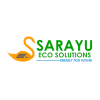

Explore the key experiences and achievements that have shaped my career across diverse businesses and organizations.
Established more than 3 decades ago in Vijayawada in the 1990’s, Tandava Krishna Agencies is a leading & premier provider of PVC pipes, tiles, sanitaryware, and construction materials, offering renowned brands such as Prince, ashirwad, astral, finolex, cera, etc.
The Vijayawada Chamber of Commerce and Industry (VCCI), established in 1955, has empowered the traders of Krishna District and Vijayawada to think globally and act locally. With an active membership of over 2600 traders and industrialists and 112 affiliated associations, VCCI has become a pivotal voice for businesses across the country. Located in the heart of Vijayawada, VCCI serves as a meeting place for business leaders and continues to guide the trade community through challenges and opportunities. VCCI is gearing up to celebrate its diamond jubilee, marking over six decades of impactful service.
As the first Senior Director Consultant of BNI Vijayawada, I had the privilege of launching two world record chapters – the first women’s chapter and the first millennial chapter globally. With a passion for breaking barriers and setting new milestones, I am also the first regional language trainer in India for BNI, empowering professionals to succeed in their native language. My journey was driven by a commitment to innovation, inclusion, and impactful leadership.
The Rotary Midtown Vijayawada Midtown, a distinguished member of Rotary International, is committed to a wide range of humanitarian initiatives including health camps, education, and environmental sustainability. With a mission to make a meaningful impact both locally and globally, this club stands out as the largest Rotary chapter in the world, boasting over 1,000 dedicated members.
Based in Vijayawada, Sarayu Eco Solutions LLP, established in January, 2020, offers cutting-edge services in the Solor Industry. Like Solor Power, Solar Power, Solar Water Heaters, Solar Street Lights, Solar Fencing, Solar Products, Related Accessories Etc. We are dedicated to pioneering sustainable solutions in energy and water management while championing community development and environmental responsibility.
Sikhara Infra Nirman Private Limited, operating under the esteemed brand 'Sikhara NIRMAAN,' is a premier provider of building and construction materials and services, with experience over 30+ years, based in Vijayawada. We revolutionize the way branded construction products reach customers in semi-urban and rural areas, offering homeowners direct access to high-quality materials, expert knowledge, and comprehensive services, including financing options.
In 2022, I took over the region of Guntur as Executive Director, and through dedicated collaboration with BNI members, we transformed the region’s world ranking from 719 to 62. Over the past two years, I’ve worked closely with members, fostering connections that have enabled them to expand their businesses globally. It has been a truly rewarding experience to see how, together, we’ve made such a meaningful impact.
Sikhara Wealth Saviors excels in delivering top-tier wealth management and financial planning services. We offer tailored advice to individuals and businesses, focusing on retirement planning, growth strategies, and preserving wealth across generations.
Founded by Brad Sugars in 1993, Action COACH has emerged as a top-tier business coaching franchise, celebrated for its innovation and leadership in the field. For over thirty years, it has set unparalleled standards in business coaching excellence. With more than 100 coaches across India, Action COACH continues to drive transformative success and growth.